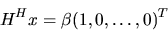

Next: Installing LAPACK Routines
Up: Documentation and Software Conventions
Previous: Real Diagonal Elements of
Contents
Index
Representation of Orthogonal or Unitary Matrices
A real orthogonal or complex unitary matrix (usually denoted Q) is often
represented in
LAPACK as a product of elementary reflectors -- also referred to as
elementary Householder matrices (usually denoted Hi). For example,
Most users need not be aware
of the details, because LAPACK routines are provided to work with this
representation:
- routines whose names begin SORG- (real) or CUNG- (complex) can generate
all or part of Q explicitly;
- routines whose name begin SORM- (real) or CUNM- (complex) can multiply
a given matrix by Q or QH without forming Q explicitly.
The following further details may occasionally be useful.
An elementary reflector (or elementary Householder matrix) H of order
n is a
unitary matrix of the form
where  is a scalar, and v is an n-vector, with
); v is often referred to
as the Householder vector .
Often v has several leading or trailing zero elements, but for the
purpose of this discussion assume that H has no such special structure.
is a scalar, and v is an n-vector, with
); v is often referred to
as the Householder vector .
Often v has several leading or trailing zero elements, but for the
purpose of this discussion assume that H has no such special structure.
There is some redundancy in the representation (5.1), which can be
removed in
various ways. The representation used in LAPACK (which differs from
those used in LINPACK or EISPACK) sets v1 = 1; hence v1 need not
be stored. In real arithmetic,
,
except that
implies H = I.
In complex arithmetic,
may be
complex, and satisfies
 and
.
Thus a complex H is
not Hermitian (as it is in other representations), but it is unitary,
which is the important property. The advantage of allowing
to be
complex is that, given an arbitrary complex vector x, H can be computed
so that
and
.
Thus a complex H is
not Hermitian (as it is in other representations), but it is unitary,
which is the important property. The advantage of allowing
to be
complex is that, given an arbitrary complex vector x, H can be computed
so that

with real  .
This is useful, for example,
when reducing a complex Hermitian matrix to real symmetric tridiagonal form,
or a complex rectangular matrix to real bidiagonal form.
.
This is useful, for example,
when reducing a complex Hermitian matrix to real symmetric tridiagonal form,
or a complex rectangular matrix to real bidiagonal form.
For further details, see Lehoucq [79].
Next: Installing LAPACK Routines
Up: Documentation and Software Conventions
Previous: Real Diagonal Elements of
Contents
Index
Susan Blackford
1999-10-01